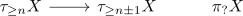

bounded above, nilpotent local system lies in the full subcategory of the constant diagram
Proposition
Let $W$ be an anima and $\mathrm{Fun}(W, \mathrm{Mod}(R))$ be the functor category into the category of module spectra for some commutative ring $R$ (todo: for what generalizes ?) Suppose $X \in \mathrm{Fun}(W, \mathrm{Mod}(R))$ is pointwise bounded above and $\pi_*(X)$ consists of \(R\)-modules such that there exists a finite filtration where the graded consists of finitely generated, projective modules with trivial action $\tau_{\leq 1}(W) \curvearrowright \pi_*(X(w))$.
Then $X$ lies in the thick stable subcategory.
Proof
heart
finitely generated projective module
finitely generated projectives are retracts of free module.
finite filtration
induction basis
see above
induction step
follows from short exact sequence is a bifiber sequence in a stable category, so the next step is an extension of two elements already lying in the subcategory.
bounded chain complex
induction basis
follows above
induction step
follows again by the fiber sequence

todo